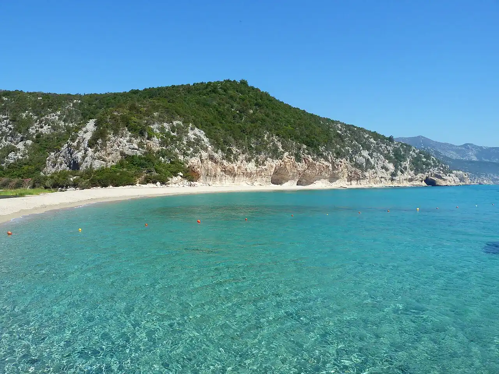

Cala Luna
Golfe d’Orosei, Sardaigne, Italie · baignade, kayak, snorkeling

Crique de sable et de galets fermée par des falaises calcaires creusées de grottes, dans le golfe d’Orosei. On y arrive en bateau ou en kayak depuis Cala Gonone, ou à pied par un long sentier côtier.
- Lieu
- Golfe d’Orosei, Sardaigne, Italie
- Niveau
- Intermédiaire
- Activités
- baignade, kayak, snorkeling
- Type d'eau
- Mer / océan
- Coordonnées
- 40.22, 9.63 (position approximative du secteur)
Dangers à connaître
- Mer vite agitée par vent d’est, sur une côte de falaises sans abri.
- Nombreux bateaux-navettes devant la plage en été.
Le conseil d'Ocean Buddy
En kayak, pars tôt de Cala Gonone et longe la côte : le vent a tendance à se lever l’après-midi.
Ouvrir dans Ocean Buddy Télécharger sur l'App Store
Source : Fiche Ocean Buddy · septembre 2026 · à vérifier localement.